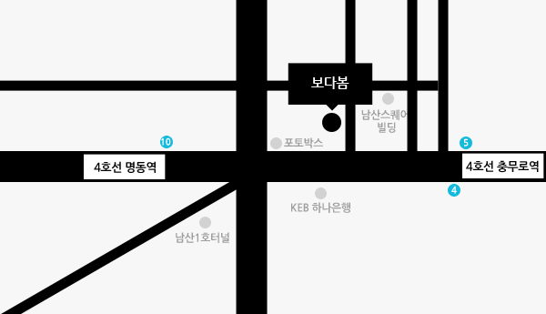

오시는 길

서울특별시 중구 충무로2가 52-4 소피아하우스 빌딩 4층
4호선 명동역 10번 출구에서 충무로역 방향으로 200m
2호선 충무로역 5번출구에서 명동역 방향으로 250m
문의: 02-2261-0985 / haenggu@naver.com
영업시간
평일 오전 11시 ~ 오후 7시
매주 토요일.일요일. 공휴일은 보다봄 휴무일 입니다.
영업 외 시간은 4층에 수거함과 필기 도구가 마련되어 있으니 맡기실 필름에 성함과 연락처를 적으셔서 넣어 주시기 바랍니다.